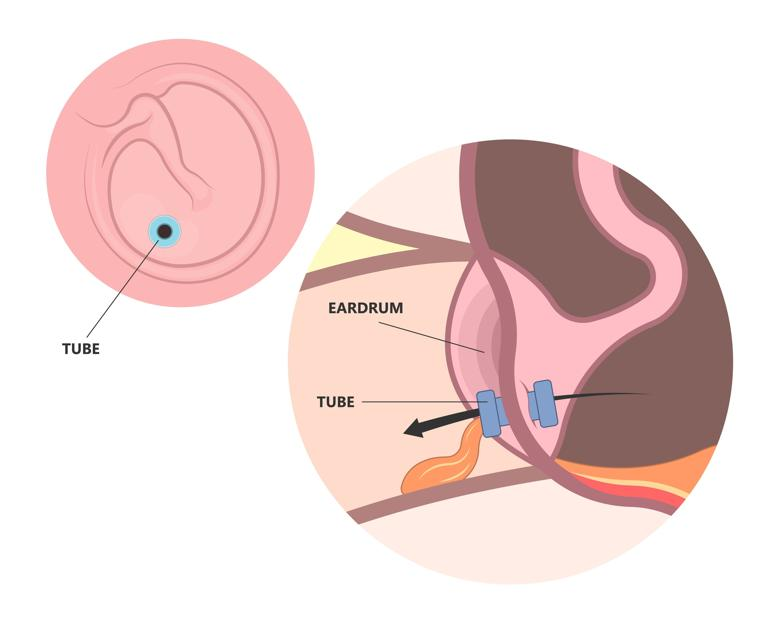
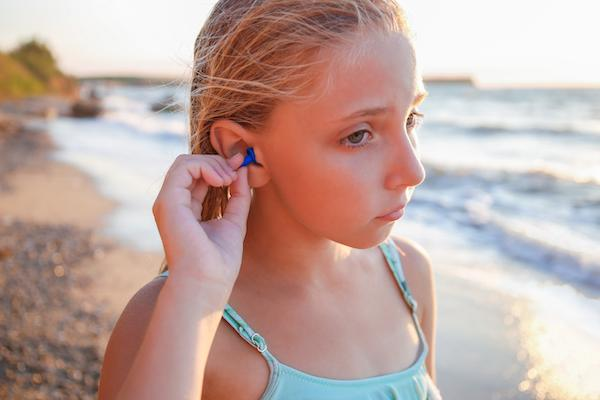

Ear tubes are tiny devices placed in the ears to help air enter the middle ear and drain fluid. This helps prevent infections and improves hearing. Ear tubes are placed during a surgery called tympanostomy.

After the surgery, your care team will want to see your child again. They may schedule follow-up visits to check how the ears are healing. Usually, ear tubes stay in for many months or up to a year. Often, they fall out on their own.
When swimming in untreated water, your care team may suggest using earplugs or a waterproof cover.
Do not put anything into the ears, like cotton swabs or other objects.
Watch for any drainage or fluid from the ears. Clear or slightly colored drainage is normal. Contact your care team if the drainage is yellow, green, or bloody.
Tell your care team if your child complains that the ear hurts or feels funny.
Keep the ears clean. Follow your care team’s advice for cleaning around the ear if needed.

Most children heal well after ear tube surgery. The tubes usually fall out naturally, and ear infections become less frequent. Continue regular checkups with your care team. Good ear health can help your child hear well and avoid infections.
Call your care team if:
You see fluid, pus, or blood coming from the ear.
Your child complains of severe ear pain or has trouble hearing.
Your child has a fever or becomes very sleepy or irritable.
You have questions about caring for the ear tubes.
Get help right away if:
Your child’s ear starts to swell, or the pain suddenly becomes severe.
There is heavy bleeding or pus that does not stop.
Your child shows signs of poor balance or trouble walking.
Your child is unresponsive or has trouble breathing.
Thank you for trusting us with your child’s care. We are here to support you and want you and your child to feel your best. Contact us with any questions.
IF YOU HAVE A MEDICAL EMERGENCY, CALL 911 OR GO TO THE EMERGENCY ROOM.
The information presented is intended for general information and educational purposes. It is not intended to replace the advice of your health care provider. Contact your health care provider if you believe you have a health problem.
Last updated May 2025
© 2025 Mytonomy, Inc. All rights reserved.